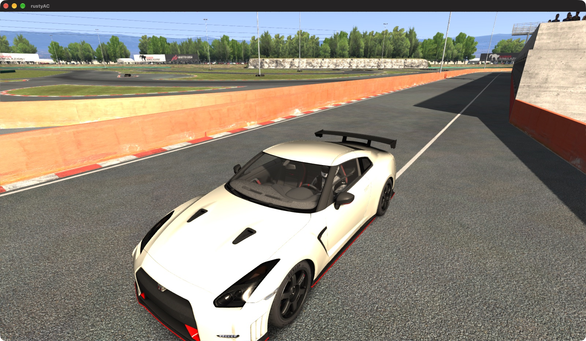
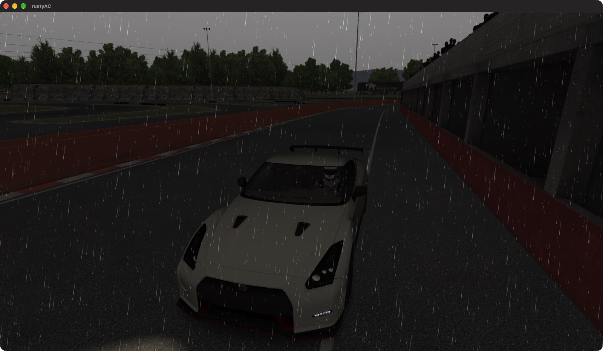
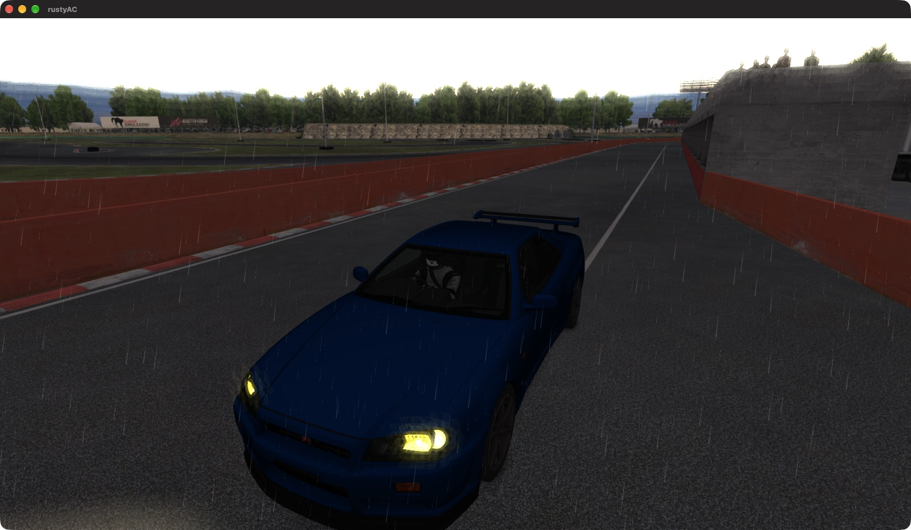
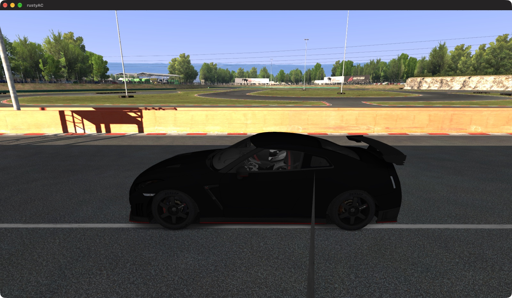
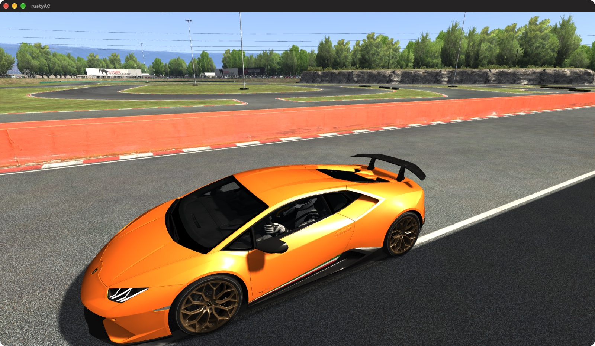
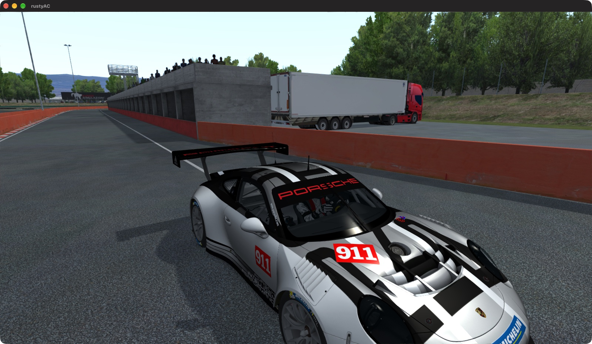
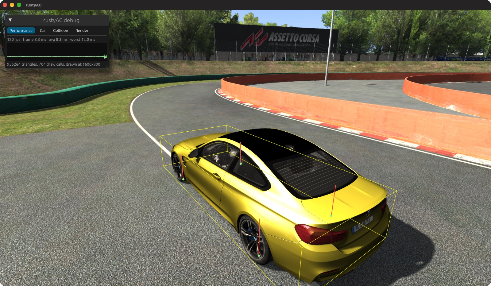
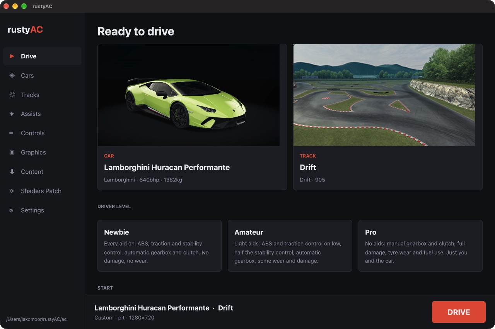

⚡
Native on Metal
The game's own renderer, drawn through wgpu on Metal. Runs as a normal macOS app, with a double-click start.

neoAC runs the Assetto Corsa 1.16 engine as a real Mac and Linux program: written in Rust, drawn with wgpu, with its own sound mixer and launcher. No Wine, no emulation. It plays with your own copy of the game.
The physics, renderer and menus come from the rustyAC port of the original game. neoAC adds the parts that make it a good citizen on a Mac.
The game's own renderer, drawn through wgpu on Metal. Runs as a normal macOS app, with a double-click start.
Cars and tracks with previews, skins, assists from newbie to pro, keys, graphics, weather and time of day, installing mods from a zip.
Headlights, brake lamps and their colours are read from each car's own lights.ini and meshes. Every car lights up its own way.
Choose a weather preset, the hour, and how slippery the track is. Rain falls in the world, not on the lens, and grip really changes.
Press F and walk around, first person, as in GTA. Press it near the car to sit back in.
F10 opens an in-game panel: frame times, telemetry, tyre contact points, the body's box, brightness and detail distance.
The game's sound banks played by a mixer written for neoAC. No FMOD library needed.
Render density and a bicubic upscale with sharpening, so a lower internal resolution still looks clean.
Tests read every car's .ini files and compare power and weight to the car's own spec sheet.
Screenshots taken in neoAC on a Mac. The cars and the track are Assetto Corsa's own content, loaded from a legal copy.

Heavy clouds, a wet road at 60% grip, and the lamps on. The red lenses are lit by the colour the car's data asks for, and the road ahead is lit from where the headlights really are.
The chase camera turns round the car with the right mouse button and stays where you leave it; double right click brings it back. The wheel moves it closer or further away.






Here is what works today and what does not yet.
acServer on the local networkYou need your own copy of Assetto Corsa 1.16 (the Windows files: content and system). neoAC contains no game files.
Install Rust from rustup.rs, then clone the repository.
git clone https://github.com/LakoMoor/neoAC cd neoAC
Put the Assetto Corsa folder somewhere, and tell neoAC where it is.
export AC_ROOT="/path/to/assettocorsa"
Open a car on a track straight away, or start the launcher.
# straight into a car cargo run --release -p rustyac-native -- --car ks_nissan_gtr --track drift # or package the launcher into the game folder and double-click it sh packaging/package_unix.sh "$AC_ROOT" # then open rustyac.command (macOS) or rustyac.sh (Linux)
Handy options: --weather, --hour, --grip, --orbit, --debug-panel, --shot. Run with --help for all of them.